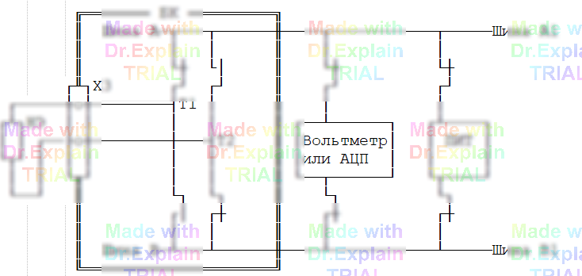

5.2.9 Команда НЭ — контроль нелинейных элементов
Сообщения команды НЭ — см. [7, п. 3.13].
Команда измеряет падение напряжения на нелинейных
элементах (диодах, светодиодах и т. д.) при прямом
и обратном включении и сохраняет оба значения
в протоколе выполнения.
Пример
00 НЭ 0.5<В<0.7, 0.1А, 4В *+Ш7/53,Ш5/67,Ш5/68* -Ш1/3,Ш1/5*
Диапазон контроля напряжения (прямое включение)
0.01 – 100 В, границы — обязательны.
При обратном включении напряжение должно быть ≥ 0.9 · Uконтр.
Обязательные режимы
- Напряжение контроля — 4 В или 10 В;
- Ток обтекания — 1 – 100 мА (прямое направление).
Синтаксис списка точек
Список разбивается символом «*» на фрагменты.
В каждом фрагменте первая (общая) точка помечается
знаком:
+— общий анод (объединение анодами);-— общий катод (объединение катодами).
Ключи
Т— использовать цифровой вольтметр (по умолчанию — АЦП);-
Н— проверять только прямое включение (обратное направление пропускается).
Источник и измеритель
Источник тока/напряжения — плата ПИТ.
Измеритель:
- по умолчанию — АЦП;
- с ключом
Т— высокоточный цифровой вольтметр.
Допускаемая погрешность
Соответствует команде КН (см. п. 5.2.7.1).
Функциональная схема измерения команды НЭ

Варианты работы
- НЭ без ключей — источник ПИТ, измеритель АЦП;
- НЭ Т — источник ПИТ, измеритель вольтметр;
- НЭ Н — измеряется только прямое направление.